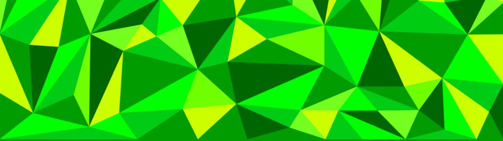

Project Idea
Overview
This project will about an app, EcoFood, that tracks the expiry time of both perishable and imperishable goods. Currently in Australia, there is a lot of household waste being thrown out because they simply didn’t get used and expired. This creates a huge defect to the environment and there’s not much currently done for the average householder to monitor and track their waste. So, that’s where EcoFood comes in. It will be able to track all food items (grocery items etc.) and see which item needs to be used before expiry date. This way the food isn’t thrown out and it will save money for the user long term as they will using up all their food.
Motivation
In Melbourne, we are currently facing a huge problem. At an average, Australians (as a whole) throw away about $7.8 billion worth of food every year. That’s about 4 million tonnes of food that end up in the land fill. One of the main reasons for this happening is that food expires and isn’t used. EcoFood helps minimised this and user will be able to track when they should consume their food by. This app is really needed in modern society as of right now, we really need to watch the health of our environment and sustain it.
Description
EcoFood in its basic sense is food expiration tracking app. It’s something that any average Australian can get costumed to. Let’s say Bill is a user. Bill loves fruits and he always gets a bunch every time he grocery shops. Bill has busy work and social life and he’s not home much, so he some of his fruits always go expired. Now with the EcoFood app, he enters each fruit and the quantity he buys. Then, the app can keep track of the fruits and when they will expire. It will give Bill regular updates on which fruit he needs to use before it expires. And of course, the app has different types of food other than fruits. EcoFood will have its own predication on when the food will expire, but the user can still enter a specific expiration date if the product does have it.
There is a social influence as you will be able add your friends on the app and see how they’re doing (you can make the public or private in the settings). The user will be able to track how much food is saved or is thrown out on average over a period time, and they can also check the local average, state average and country average. This might help motivate the user to do better. As a fun little addon, the user can create their own customizable character (something like BitEmoji from snapchat). There are also milestones where you can gain badges and in app currency which you can use to customize the skin of the app or unlock customizable items for you character.
To make the app more practical, it is connected to a another called Yummly. Yummly is an app where you can enter the ingredients you currently have, and it will find recipes that you can make. So when something is about expire, EcoFood will notify that this item is expiring and will find different recipes you can make from the ingredients you already have in your inventory.
Overall, EcoFood must have useful features that helps to motivate and keep user on track to minimise their waste.
Tools and Technologies
EcoFood is made to run on Android and IOS devices only. The app will be programmed with Python, this is good choice as the code will shorter and more readable than the older languages. And it should also visual look better. All user information will be stored in a cloud database so if there is a case where the user changes devices, all their previous progress will be allocated to the new (or multiple) device/s.
Skills Required
The main skills required to create the app is knowing how to create a program using Python. And you need a computer and Python IDE to program the app. This project is very feasible as this is quite a simple program, so it wouldn’t take too long to program, and most Python IDE is free. The cost of this project is finding someone who will be able to program the app and most likely outsourcing a server to keep users’ data.
Outcome
If this project is successful, it’s a triumph for a greener and healthier society. It will help to reduce amount of waste in the landfill sites and reduce greenhouse emissions created. The original problem won’t be solved but it will drastically help to reduce the impact of the problem. This app will have positive impact on society as it can help communities be greener. It will also promote home cooked meals and save money for users as they will using up all their grocery. And eating out less.